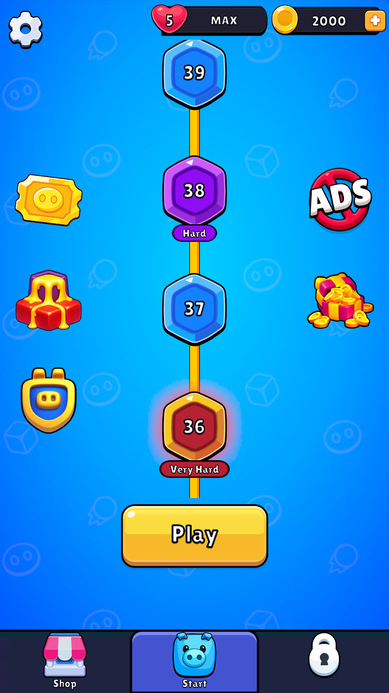
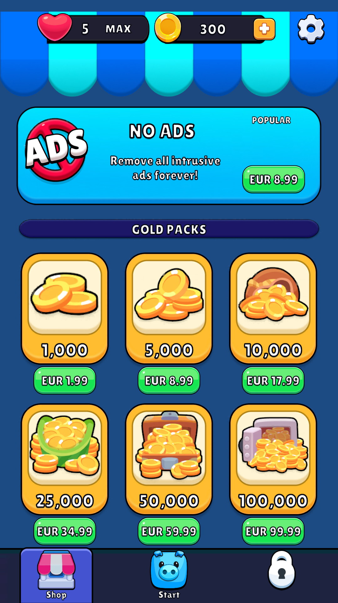

Canvas 1080×1920, Match 0.5; font/atlas Lilita One gốc. Nguồn web không có version stamp 0.36.3. Các preview URP tạm đổi Canvas sang ScreenSpaceCamera được ghi riêng với ảnh Game View. Không phải device test hoặc chấp nhận pixel-perfect.



Game View Home36 1080×2340 · Game View Home36 720×1280 · Game View Shop36 1080×2340 · Home label 1/1
Home 720×1280 · Home 1080×2340 · Shop 1080×2340 · Unity regression121/121 · Final UI5/5
Đã sửa: static hierarchy nằm trong prefab gốc; node/Play/header giảm theo ảnh đối chiếu; đường vàng hiện đúng; pattern lớn hơn; outline/shadow font gốc; item Gold dùng chung prefab sample. Chưa xác nhận native 0.36.3 về toàn bộ spacing, unlock tuning, icon variants, animation timing hay dịch vụ production. Header/dock neo theo m?p, tab theo ba c?t; difficulty pill t? fit text tr?n prefab. Modal chung/HUD vẫn là renderer cũ và chưa được công bố là prefab hóa toàn bộ game.